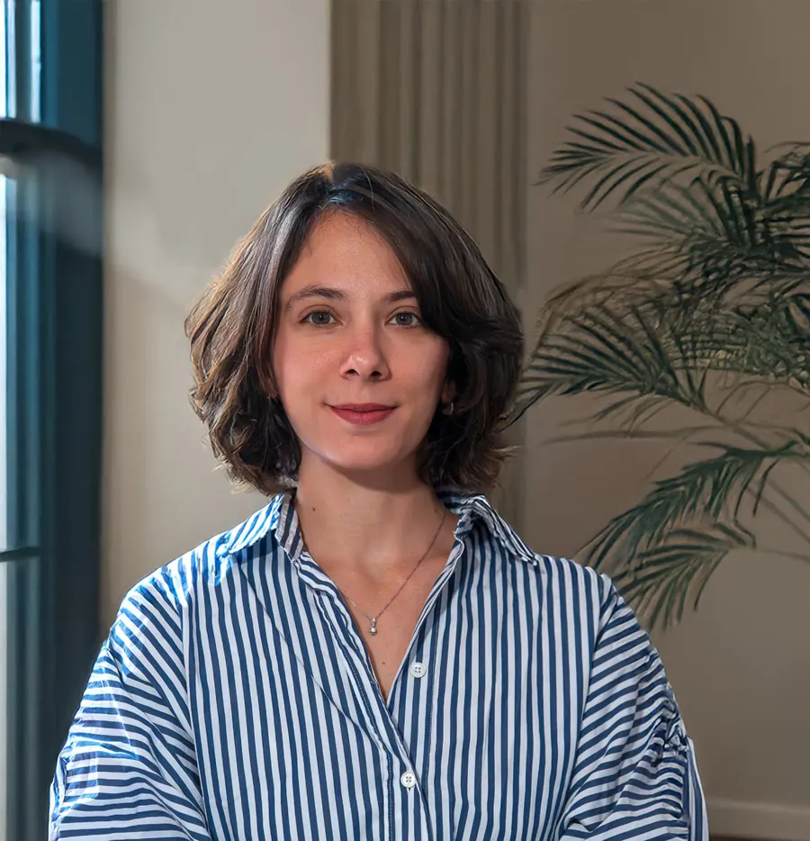

Ένας σταθερός χρόνος μόνο για εσάς, για να μιλήσετε για ό,τι σας απασχολεί χωρίς να κρίνεστε. Μαζί ξεδιαλύνουμε τι συμβαίνει, πώς συνδέεται με τις σχέσεις και την ιστορία σας και ποια μοτίβα επαναλαμβάνονται. Η ατομική θεραπεία δεν σημαίνει ότι αφήνουμε έξω τους άλλους: η συστημική ματιά φέρνει μέσα στο δωμάτιο την οικογένεια, τον σύντροφο, τη δουλειά, ώστε να καταλάβετε βαθύτερα τον εαυτό σας και να αποκτήσετε περισσότερες επιλογές. Με τους εφήβους δουλεύουμε με σεβασμό στον δικό τους χώρο και, όπου βοηθά, με τη συνεργασία των γονιών.
Ψυχολόγος · Συστημική Ψυχοθεραπεύτρια · Παγκράτι
Εύα ΠαπαϊωάννουΨυχολόγος & Συστημική Ψυχοθεραπεύτρια στο Παγκράτι
Ατομική θεραπεία ενηλίκων και εφήβων, θεραπεία ζεύγους και οικογένειας, θεραπευτικές ομάδες — με τη ματιά της Συστημικής-Διαλεκτικής Προσέγγισης.
- 5,0Google
- da10/10doctoranytime

- MScΚλινική Ψυχική Υγεία · ΑΠΘ
- 6 έτηΕκπαίδευση στη Συστημική Ψυχοθεραπεία · ΑΚΜΑ
- 2021–24Υπεύθυνη Ψυχικής Υγείας · Γιατροί Χωρίς Σύνορα
- 5,0Βαθμολογία στο Google
- 10/10Βαθμολογία στο doctoranytime
Συστημική-Διαλεκτική Προσέγγιση
Η προσέγγισή μου
Δουλεύω με βάση τη Συστημική-Διαλεκτική Προσέγγιση, στην οποία εκπαιδεύτηκα για έξι χρόνια στο Αθηναϊκό Κέντρο Μελέτης του Ανθρώπου (ΑΚΜΑ). Σε αυτήν, κανείς δεν είναι «το πρόβλημα».
Ο καθένας μας ζει μέσα σε σχέσεις —την οικογένεια όπου μεγάλωσε, τον σύντροφο, τους φίλους, τη δουλειά— και ό,τι μας δυσκολεύει αποκτά νόημα όταν το δούμε μέσα σε αυτό το πλαίσιο. Έτσι δουλεύω, είτε απέναντί μου κάθεται ένας άνθρωπος είτε ένα ζευγάρι, μια οικογένεια ή μια ομάδα: με περιέργεια αντί για κριτική, αναζητώντας τι κρατά μια δυσκολία ζωντανή και από πού μπορεί να ξεκινήσει η αλλαγή.
Ο άνθρωπος μέσα στις σχέσεις του
Κανείς δεν ζει μόνος του. Η οικογένεια από την οποία προερχόμαστε, ο σύντροφος, οι φίλοι, η δουλειά, ακόμη και η κοινωνία γύρω μας επηρεάζουν το πώς νιώθουμε και το πώς φερόμαστε. Γι’ αυτό, ό,τι σας δυσκολεύει δεν το βλέπουμε απομονωμένο· το κοιτάμε μέσα στο πλαίσιο όπου γεννήθηκε και ζει.
Μοτίβα, όχι φταίχτες
Στη συστημική ματιά η αιτία και το αποτέλεσμα σπάνια είναι μια ευθεία γραμμή. Συνήθως πρόκειται για κύκλους: η κίνηση του ενός φέρνει την αντίδραση του άλλου, που με τη σειρά της τροφοδοτεί ξανά την πρώτη. Δεν ψάχνουμε ποιος φταίει· αναζητούμε το μοτίβο και το σημείο όπου μπορεί να γίνει κάτι διαφορετικό.
Ο διάλογος των αντιθέτων
Συχνά μέσα μας συνυπάρχουν ανάγκες που μοιάζουν αντιφατικές: να κρατηθούμε και να απομακρυνθούμε, να αλλάξουμε και να μείνουμε ίδιοι. Η διαλεκτική ματιά δεν βιάζεται να διαλέξει πλευρά. Ακούμε και τις δύο φωνές, γιατί η αλλαγή γεννιέται συχνά ακριβώς στη συνάντησή τους.
Μια σχέση συνεργασίας
Εσείς γνωρίζετε τη ζωή σας καλύτερα από οποιονδήποτε· εγώ φέρνω μια διαφορετική ματιά, ερωτήσεις και εργαλεία. Δεν υπάρχει έτοιμο καλούπι: ο ρυθμός, οι στόχοι και ο τρόπος της δουλειάς μας διαμορφώνονται μαζί, με σεβασμό σε ό,τι έχετε ήδη καταφέρει και στις δυνάμεις που ήδη υπάρχουν.
Δείτε το στην πράξη
Ευθεία γραμμή ή κύκλος;
Διαλέξτε μια καθημερινή κατάσταση και αλλάξτε ανάμεσα στις δύο ματιές. Η γραμμική ψάχνει μια αιτία κι έναν φταίχτη· η κυκλική δείχνει πώς οι κινήσεις όλων τροφοδοτούν η μία την άλλη.
Τα παραδείγματα είναι γενικά και ενδεικτικά — κάθε άνθρωπος και κάθε οικογένεια είναι διαφορετικοί.
Στη συστημική θεραπεία δεν ρωτάμε «ποιος φταίει;» αλλά «τι κρατά τη δυσκολία ζωντανή — και πού μπορεί να ξεκινήσει κάτι διαφορετικό;»
Τρόποι συνεργασίας
Συνεδρίες
Ένας άνθρωπος, δύο, μια ολόκληρη οικογένεια ή μια ομάδα — η συστημική ματιά προσαρμόζεται σε όσους βρίσκονται στο δωμάτιο.
Όταν οι ίδιοι καβγάδες επαναλαμβάνονται, όταν η απόσταση μεγαλώνει ή όταν ένα γεγονός —μια απιστία, ένα παιδί, μια μετακόμιση, μια απώλεια— ταρακουνά τη σχέση, η θεραπεία ζεύγους προσφέρει έναν ασφαλή χώρο για να ακουστούν και οι δύο. Δεν παίρνω το μέρος κανενός. Βοηθώ να φανεί ο κύκλος που σας εγκλωβίζει, να ειπωθούν όσα δύσκολα λέγονται στο σπίτι και να βρείτε νέους τρόπους επικοινωνίας. Η θεραπεία δεν έχει ως στόχο να «σωθεί» οπωσδήποτε η σχέση, αλλά να πάρετε αποφάσεις με καθαρότητα και σεβασμό, όποιες κι αν είναι αυτές.
Μια δυσκολία που φαίνεται σε ένα μέλος —ένα παιδί που απομονώνεται, ένας έφηβος σε σύγκρουση, ένας γονιός που δεν αντέχει άλλο— συχνά αφορά όλη την οικογένεια. Στη θεραπεία οικογένειας συναντιόμαστε μαζί, για να ακουστεί η φωνή του καθενός και να φανεί πώς συνδέονται οι αντιδράσεις μεταξύ τους. Δουλεύουμε με τις αλλαγές του κύκλου ζωής, όπως η εφηβεία, ένα διαζύγιο, μια νέα σύνθεση οικογένειας ή μια απώλεια, και με τις δυσκολίες του γονεϊκού ρόλου. Ο στόχος είναι η οικογένεια να βρει ξανά τρόπους να στηρίζει τα μέλη της.
Στην ομάδα μοιράζεστε τις εμπειρίες σας με ανθρώπους που περνούν κάτι αντίστοιχο, μέσα σε ένα πλαίσιο ασφάλειας και εμπιστευτικότητας. Συχνά εκεί ανακαλύπτουμε ότι δεν είμαστε μόνοι, βλέπουμε τον εαυτό μας μέσα από τα μάτια των άλλων και δοκιμάζουμε νέους τρόπους να σχετιζόμαστε. Συντονίζω ψυχοθεραπευτικές και ψυχοκοινωνικές ομάδες με βάση τις αρχές της Συστημικής-Διαλεκτικής Προσέγγισης. Αν σας ενδιαφέρει μια ομάδα, επικοινωνήστε μαζί μου για να μάθετε ποιες ομάδες λειτουργούν ή ξεκινούν και αν ταιριάζουν σε όσα αναζητάτε.
Για επαγγελματίες ψυχικής υγείας και εργαζόμενους πεδίου, η εποπτεία είναι ένας χώρος για να σκεφτούν πάνω στη δουλειά τους, στα περιστατικά και στις δυσκολίες που φέρνει η καθημερινή επαφή με τον ανθρώπινο πόνο. Από το 2024 παρέχω εποπτεία αξιοποιώντας την κλινική μου εμπειρία και τα χρόνια που συντόνισα και επόπτευσα ομάδες επαγγελματιών σε κοινοτικά πλαίσια και σε διεθνή ανθρωπιστική οργάνωση. Δίνουμε χώρο στο κλινικό κομμάτι, στις σχέσεις μέσα στις ομάδες εργασίας και στη φροντίδα του ίδιου του επαγγελματία, ώστε η δουλειά να παραμένει ουσιαστική και βιώσιμη.
Με τι μπορούμε να δουλέψουμε
Θέματα που με απασχολούν
Άγχος και στρες
Όταν η ανησυχία δεν σταματά, το σώμα είναι συνεχώς σε επιφυλακή και η καθημερινότητα βαραίνει. Κατανοούμε τι πυροδοτεί το άγχος, τι το συντηρεί και πώς μπορείτε να ανακτήσετε την αίσθηση ελέγχου.
Σχέσεις
Δυσκολίες με τον σύντροφο, την οικογένεια, φίλους ή συναδέλφους· μοτίβα που επαναλαμβάνονται από σχέση σε σχέση. Εξερευνούμε πώς σχετίζεστε, τι χρειάζεστε από τους άλλους και πώς να το ζητάτε.
Πένθος και απώλεια
Ο θάνατος ενός αγαπημένου προσώπου, ένας χωρισμός, μια απώλεια που δεν έχει όνομα. Το πένθος δεν έχει «σωστό» χρόνο. Δίνουμε χώρο σε ό,τι νιώθετε, με εκπαίδευση και στη συμβουλευτική πένθους παιδιών και οικογενειών.
Γονεϊκός ρόλος
Ο γονεϊκός ρόλος φέρνει χαρά, αλλά και κούραση, ενοχές και αμφιβολίες. Σκεφτόμαστε μαζί τις ανάγκες των παιδιών και τις δικές σας, τα όρια, τις συγκρούσεις και τις μεταβάσεις της οικογένειας.
Προσωπική ανάπτυξη
Δεν χρειάζεται να υπάρχει «πρόβλημα» για να ξεκινήσει κανείς θεραπεία. Μπορεί απλώς να θέλετε να γνωρίσετε καλύτερα τον εαυτό σας, να πάρετε μια απόφαση ή να βρείτε περισσότερη ελευθερία στον τρόπο που ζείτε.
ΛΟΑΤΚΙ+ άτομα
Ένας χώρος ασφαλής και χωρίς προκαταλήψεις για ΛΟΑΤΚΙ+ άτομα και τις οικογένειές τους: ταυτότητα, coming out, σχέσεις, αποδοχή. Με εκπαίδευση στη συμβουλευτική και την ψυχοθεραπεία ΛΟΑΤΚΙ+ ατόμων.
Σχετικά με εμένα
Σπουδές, εμπειρία και διαδρομή
- Άδεια άσκησης επαγγέλματος23998
- Ιδιωτικό γραφείοαπό το 2021
- Συνεργάζεται μεενήλικες, εφήβους, ζευγάρια, οικογένειες, ομάδες
Σπούδασα Ψυχολογία στο Πανεπιστήμιο Κρήτης και το 2018 ξεκίνησα την πολυετή εκπαίδευσή μου στη Συστημική Ψυχοθεραπεία στο Αθηναϊκό Κέντρο Μελέτης του Ανθρώπου (ΑΚΜΑ), την οποία ολοκλήρωσα το 2024. Έχω μεταπτυχιακό στην Κλινική Ψυχική Υγεία από την Ιατρική Σχολή του Αριστοτελείου Πανεπιστημίου Θεσσαλονίκης, όπου η έρευνά μου αφορούσε τον ρόλο του τύπου δεσμού των επαγγελματιών πεδίου στην επαγγελματική τους ποιότητα ζωής.
Έχω επίσης εκπαιδευτεί στην Κλινική Ψυχοπαθολογία (Αιγινήτειο Νοσοκομείο), στη Γνωσιακή Συμπεριφορική Θεραπεία εστιασμένη στο Τραύμα (TF-CBT), στη Συμβουλευτική Πένθους παιδιών και οικογενειών και στη Συμβουλευτική και Ψυχοθεραπεία ΛΟΑΤΚΙ+ ατόμων. Έχω εργαστεί σε κοινοτικά πλαίσια ψυχικής υγείας και σε συνεργασία με διεθνείς οργανισμούς, και για αρκετά χρόνια βρέθηκα σε θέσεις ευθύνης, συντονίζοντας και εποπτεύοντας επαγγελματίες ψυχικής υγείας και εργαζόμενους πεδίου — από το 2021 έως το 2024 ως Υπεύθυνη του Τμήματος Ψυχικής Υγείας των Γιατρών Χωρίς Σύνορα στην Ελλάδα.
Από το 2021 εργάζομαι και ιδιωτικά, προσφέροντας ψυχοθεραπευτική υποστήριξη σε ενήλικες και εφήβους, καθώς και θεραπεία ομάδας, οικογένειας και ζεύγους, ενώ από το 2024 παρέχω και εποπτεία σε επαγγελματίες ψυχικής υγείας και εργαζόμενους πεδίου.
- 2025Ακαδημαϊκή δημοσίευσηΟ ρόλος της ενσυναίσθησης και του τύπου δεσμού στην επαγγελματική ποιότητα ζωής των εργαζομένων στο προσφυγικό πεδίο στην Ελλάδα · Ιατρική Σχολή ΑΠΘ
- 2024 – σήμεραΕποπτεία επαγγελματιών ψυχικής υγείας και εργαζομένων πεδίουΙδιωτικό γραφείο
- 2023 – 2025Μεταπτυχιακό, Κλινική Ψυχική ΥγείαΙατρική Σχολή, Αριστοτέλειο Πανεπιστήμιο Θεσσαλονίκης
- 2023Σύμβουλος ΨυχολόγοςΣχολείο Δεύτερης Ευκαιρίας
- 2022Γνωσιακή Συμπεριφορική Θεραπεία εστιασμένη στο Τραύμα (TF-CBT)Center of Cognitive Studies
- 2021 – 2024Υπεύθυνη Τμήματος Ψυχικής ΥγείαςΓιατροί Χωρίς Σύνορα, Ελλάδα
- 2021 – σήμεραΨυχολόγος – Συστημική ΨυχοθεραπεύτριαΙδιωτικό γραφείο, Παγκράτι
- 2021Συμβουλευτική και Ψυχοθεραπεία ΛΟΑΤΚΙ+ ατόμωνOrlando
- 2021ΨυχολόγοςSolidarityNow
- 2020 – 2021Κλινική ΨυχοπαθολογίαΑιγινήτειο Νοσοκομείο, ΕΠΙΨΥ
- 2020 – 2021Συμβουλευτική Πένθους παιδιών και οικογενειώνΜέριμνα
- 2018 – 2024Εκπαίδευση στη Συστημική ΨυχοθεραπείαΑθηναϊκό Κέντρο Μελέτης του Ανθρώπου (ΑΚΜΑ)
- 2012 – 2018Πτυχίο ΨυχολογίαςΠανεπιστήμιο Κρήτης
Με τα δικά τους λόγια
Κριτικές
Άριστες αξιολογήσεις στο Google και στο doctoranytime, από ανθρώπους που δούλεψαν μαζί της. Κάθε κριτική παρουσιάζεται αυτούσια.
Μετά από περισσότερα από τρία χρόνια θεραπείας με την Εύα, μου είναι πραγματικά δύσκολο να χωρέσω σε μια αξιολόγηση όλα όσα έχω να πω. Κοιτάζοντας πίσω, νιώθω ότι έχω εξελιχθεί και αλλάξει πάρα πολύ ως άνθρωπος και δίνω ένα πολύ μεγάλο μερίδιο σε όσα δουλέψαμε μαζί. Η Εύα κατάφερε να δημιουργήσει από την αρχή έναν χώρο στον οποίο μπορούσα να είμαι απόλυτα ειλικρινής και να νιώθω ότι ακούγομαι χωρίς να κρίνομαι, ενώ παράλληλα με βοήθησε να καταλάβω βαθύτερα τον εαυτό μου, τα μοτίβα και τις σχέσεις μου. Ήξερε πότε να ακούσει και πότε να με προβληματίσει ή να με βοηθήσει να δω τα πράγματα από μια διαφορετική οπτική. Πλέον νιώθω ότι έχω πολύ περισσότερα εργαλεία, αυτογνωσία και εμπιστοσύνη στον εαυτό μου. Είμαι πραγματικά ευγνώμων για τη δουλειά που κάναμε μαζί και για όλα όσα μου έχει προσφέρει αυτά τα χρόνια.Άψογη επαγγελματίας και πάνω απ' όλα άνθρωπος, οι συνεδρίες μας είναι ο,τι πιο ουσιαστικό έχω κάνει για τον εαυτό μου το τελευταίο διάστημα. Τη συστήνω ανεπιφύλακτα.Πρόκειται για μια εξαιρετική επαγγελματία, με πολύ καλή κατάρτιση, ουσιαστική παρουσία και έναν τρόπο δουλειάς που συνδυάζει την αμεσότητα με τον σεβασμό και την ειλικρίνεια. Ανταποκρίθηκε στο αίτημά μου με μεγάλη αμεσότητα και κατάφερε να το πλαισιώσει, αλλά και να με πλαισιώσει ως άνθρωπο, με έναν τρόπο εξαιρετικά υποστηρικτικό και ουσιαστικό. Οι παρατηρήσεις και τα σχόλιά της ήταν πραγματικά πολύ to the point: εύστοχα, αιχμηρά και ταυτόχρονα πάντα με τρόπο που βοηθούσε να δω τα πράγματα από μια διαφορετική οπτική. Ιδιαίτερα ξεχώρισα τον τρόπο με τον οποίο χρησιμοποιούσε εικόνες και παραδείγματα, που ήταν πολύ εύστοχα και με βοήθησαν να κατανοήσω και να συνδέσω πράγματα με έναν πολύ άμεσο και βιωματικό τρόπο. Ένιωσα ότι άκουσε πραγματικά αυτό που είχα ανάγκη, χωρίς να με βάλει σε κάποιο έτοιμο καλούπι. Η προσέγγισή της ήταν ταυτόχρονα υποστηρικτική, ουσιαστική και αρκετά διεισδυτική, με έναν τρόπο που προσωπικά εκτίμησα.Πολύ ζεστός χώρος και εξαιρετική επαγγελματίας, ικανή να ακούσει την ανάγκη του ανθρώπου, να καταλάβει τον πόνο και να συντροφεύσει στο ταξίδι αλλαγής που επιλέγει ο καθένας.Εξαιρετική επαγγελματίας, με ενσυναίσθηση και κατανόηση. Από τις πρώτες μας συναντήσεις δημιουργήθηκε ένα κλίμα ασφάλειας και εμπιστοσύνης, όπου μπορούσα να εκφράσω ελεύθερα τα συναισθήματά μου. Ακούει με πραγματικό ενδιαφέρον τις σκέψεις μου και μέσα από τις συζητήσεις μας με βοήθησε να δω αρκετές καταστάσεις από διαφορετική οπτική. Την ευχαριστώ για τη βοήθεια και τη στήριξή της και τη συστήνω ανεπιφύλακτα.εξαιρετικη επαγγελματίας, με απόλυτη ενσυναίσθηση και κατανόηση. Από την πρώτη συνεδρία ένιωσα ασφάλεια ώστε να μπορέσουμε να συζητήσουμε σε βάθος όσα θέματα με απασχολούσαν. Θα την συνιστούσα ανεπιφύλακτα καθώς διαθέτει βαθιά γνώση του αντικειμένου της και με προσέγγισε με πολύ διακριτικό αλλά παράλληλα ουσιαστικό τρόπο.Εξαιρετική και καταρτισμένη επαγγελματίας, συνοδοιπόρος στα μεγαλώματα των ανθρώπων με ενσυναίσθηση και σεβασμό!Η Εύα με έχει καθοδηγήσει σταθερά τα τελευταία χρόνια και είμαι ευγνώμων για την γνωριμία μας. Απομπνέει εμπιστοσύνη και oι συνεδρίες μαζί της έχουν φροντιστικό χαρακτήρα. Καταλαβαίνει ποιες είναι οι ανάγκες είτε ατομικά είτε ομαδικά.Έχω μείνει πολύ ευχαριστημένη από την θεραπεία μου με την κ. Παπαϊωάννου. Επαγγελματίας, προσιτή, με ικανότητα να ακούει και να κατανοεί και με πολύ εύστοχες παρεμβάσεις. Μου έχει εμπνεύσει εμπιστοσύνη.Εξαιρετική ψυχολόγος, τόσο σε ατομικές όσο και σε ομαδικές συνεδρίες. Την συνιστώ ανεπιφύλακτα!Εξαιρετική επαγγελματίας και άνθρωπος.Αξιόλογη επαγγελματίας, με εμπειρία στο αντικείμενοΠριν συναντηθούμε
Συχνές ερωτήσεις
Τι είναι η συστημική ψυχοθεραπεία;
Η συστημική ψυχοθεραπεία βλέπει τον άνθρωπο μέσα στις σχέσεις και στα πλαίσια όπου ζει: οικογένεια, ζευγάρι, φίλους, δουλειά. Αντί να ψάχνει έναν «φταίχτη», εστιάζει στα μοτίβα που επαναλαμβάνονται ανάμεσα στους ανθρώπους και στο πώς μπορούν να αλλάξουν. Μπορεί να γίνει ατομικά, με ζευγάρια, με οικογένειες ή σε ομάδες.
Πρέπει να έρθει και η οικογένειά μου ή ο σύντροφός μου;
Όχι. Οι περισσότερες θεραπείες είναι ατομικές, και η συστημική ματιά λειτουργεί εξίσου καλά με έναν άνθρωπο στο δωμάτιο. Αν κάποια στιγμή φανεί ότι θα βοηθούσε μια κοινή συνάντηση με τον σύντροφο ή την οικογένεια, το συζητάμε και το αποφασίζετε εσείς.
Πώς είναι η πρώτη συνεδρία;
Η πρώτη συνεδρία είναι μια γνωριμία. Μου λέτε τι σας φέρνει, τι θα θέλατε να αλλάξει και τι σας έχει βοηθήσει μέχρι τώρα, κι εγώ σας εξηγώ πώς δουλεύω. Στο τέλος σκεφτόμαστε μαζί αν και πώς θα συνεχίσουμε. Η ατομική συνεδρία διαρκεί 50 λεπτά.
Πόσο συχνά γίνονται οι συνεδρίες και πόσο διαρκεί η θεραπεία;
Συνήθως οι συνεδρίες γίνονται μία φορά την εβδομάδα, ιδίως στην αρχή, ώστε να υπάρχει συνέχεια. Η συνολική διάρκεια διαφέρει από άνθρωπο σε άνθρωπο: άλλοι χρειάζονται λίγους μήνες για ένα συγκεκριμένο ζήτημα, άλλοι επιλέγουν μια μακρύτερη διαδρομή. Τον ρυθμό τον επανεξετάζουμε μαζί στην πορεία.
Δουλεύετε και με εφήβους;
Ναι. Δουλεύω με εφήβους σε ατομικές συνεδρίες, με σεβασμό στον δικό τους χώρο και στην εμπιστευτικότητα. Όπου βοηθά, και πάντα σε συνεννόηση με τον έφηβο, μπορούμε να συναντηθούμε και με τους γονείς ή να κάνουμε συνεδρίες οικογένειας.
Πώς μπορώ να συμμετάσχω σε μια ομάδα;
Επικοινωνήστε μαζί μου τηλεφωνικά για να μάθετε ποιες ομάδες λειτουργούν ή ξεκινούν. Πριν από την ένταξη σε μια ομάδα γίνεται μια ατομική γνωριμία, ώστε να δούμε μαζί αν η ομάδα ταιριάζει σε όσα αναζητάτε αυτή τη στιγμή.
Είναι εμπιστευτικό ό,τι λέμε στις συνεδρίες;
Ναι. Ό,τι συζητάμε μένει μεταξύ μας, σύμφωνα με τον κώδικα δεοντολογίας των ψυχολόγων. Οι μόνες εξαιρέσεις είναι όσες προβλέπει ο νόμος, για παράδειγμα όταν υπάρχει σοβαρός κίνδυνος για τη ζωή κάποιου. Στις ομάδες, όλα τα μέλη δεσμεύονται να τηρούν την εμπιστευτικότητα.
Πώς πληρώνω και τι γίνεται αν χρειαστεί να ακυρώσω;
Η πληρωμή γίνεται στο γραφείο, με κάρτα ή μετρητά. Αν χρειαστεί να ακυρώσετε ένα ραντεβού που κλείσατε μέσω doctoranytime, μπορείτε να το κάνετε έως 3 ώρες πριν. Για οποιαδήποτε αλλαγή, καλέστε στο 698 687 8873.
Τηλέφωνο698 687 8873
ΔιεύθυνσηΣπύρου Μερκούρη 22Β, Παγκράτι, Αθήνα 116 34
ΠληρωμήΣτο γραφείο, με κάρτα ή μετρητά
Ωράριο
- Δευτέρα09:00 – 21:00
- Τρίτη09:00 – 21:00
- Τετάρτη09:00 – 21:00
- Πέμπτη09:00 – 21:00
- Παρασκευή09:00 – 21:00
- ΣάββατοΚλειστά
- ΚυριακήΚλειστά
Κατόπιν ραντεβού.
Πώς θα έρθετε
Το γραφείο βρίσκεται στη Σπύρου Μερκούρη 22Β στο Παγκράτι, ακριβώς δίπλα στο Άλσος Παγκρατίου και λίγα τετράγωνα από την Πλατεία Μεσολογγίου.
Από τον σταθμό του Μετρό «Ευαγγελισμός» (γραμμή 3) είναι περίπου 10–12 λεπτά με τα πόδια. Δεν υπάρχει ιδιωτικός χώρος στάθμευσης, οπότε υπολογίστε λίγα λεπτά για να παρκάρετε στους γύρω δρόμους.
Οδηγίες στο Google Maps